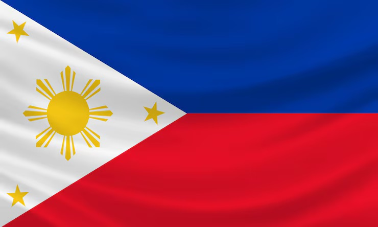

Kyla Gwen Papa
About Me
Hello! I'm Kyla Gwen Papa. Everyone calls me Kyle. I'm from the Philippines. I served my mission in the Philippines Butuan Mission and finished last 2025! I'm currently studying Software Development, working as a graphic artist and virtual assistant for medical corporations in the US. I love to learn new things and have tons of hobbies. I love spending time with my family and friends. I also love to create and design things.
The Philippines

Official Flag of the Philippines
The Philippines is a country in Southeast Asia. It is an archipelago of 7,641 islands. The capital city is Manila. The Philippines is known for its beautiful beaches, rich culture, and delicious food.